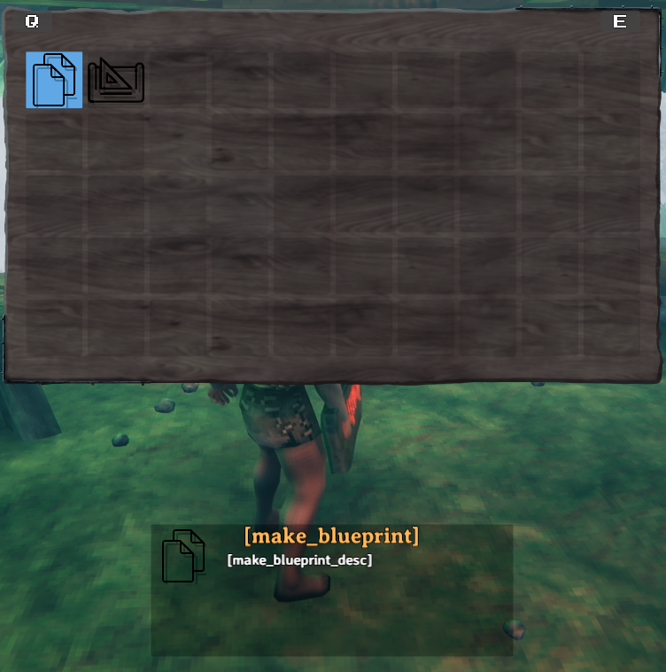

Pieces, Tables, and Tabs
Note: This example requires assets to be loaded, as well as localizations.
Tables & Tabs
PieceTables can be associated with items such as Hammer, Cultivator, and Hoe. Each have their own set of categories which can act as tabs to organise content within a certain PieceTable.
TODO: prefab component requirement description
see: AddPieceTable
PieceManager.Instance.AddPieceTable(BlueprintRuneBundle.LoadAsset<GameObject>("_BlueprintPieceTable"));
Tabs/Categories are something we are looking to provide interfaces and abstractions for in our v1.1 release, so key an eye out for any updates from JVL.
Pieces
Pieces in Valheim are anything that can be built in the game, through means such as the Hammer, Cultivator, or Hoe. This includes things such as plant sapplings, the workbench, and walls. Custom pieces are handled by the PieceManager singleton.
Note: You must only use names of existing prefabs (either ones you created or default Valheim ones). This can be prefabs that have already been registered by another mod, or that already exist in the game.
In order for a prefab to be a piece, it must have the Piece component attached to the prefab.
"Empty piece" example
In this example we will create a stubbed piece to act as a demonstration for the minimal implementation for pieces, which will allow a piece to be selected and placed into the environment as a networked object. We add the CustomPiece via the PieceManager.
private void AddEmptyItems()
{
CustomPiece CP = new CustomPiece("$piece_lul", "Hammer");
var piece = CP.Piece;
piece.m_icon = testSprite;
var prefab = CP.PiecePrefab;
prefab.GetComponent<MeshRenderer>().material.mainTexture = testTex;
PieceManager.Instance.AddPiece(CP);
}

Blueprint Rune from prefabs using PieceConfigs
The Blueprint rune, a custom item one of our developers has been working on, is intended to duplicate existing structures. In order to keep this example simple, we are not including this functionality, but are utilising these assets to provide an example of loading pieces via prefabs, so please bear in mind that while the code bellow is perfectly functional, there is no mesh/model associated with the following pieces due to the nature of their intended function.
With that said, we will load two new pieces into the previously created blueprint piecetable. In order to better facilitate creation of pieces we have introduced the abstractions of PieceConfig's and RequirementConfig. These allow us to quickly and easily define common properties for pieces, such as the table they belong too, any restrictions or resources required.
private void CreateRunePieces()
{
// Create and add custom pieces
var makebp_prefab = BlueprintRuneBundle.LoadAsset<GameObject>("make_blueprint");
var makebp = new CustomPiece(makebp_prefab,
new PieceConfig
{
PieceTable = "_BlueprintPieceTable"
});
PieceManager.Instance.AddPiece(makebp);
var placebp_prefab = BlueprintRuneBundle.LoadAsset<GameObject>("piece_blueprint");
var placebp = new CustomPiece(placebp_prefab,
new PieceConfig
{
PieceTable = "_BlueprintPieceTable",
AllowedInDungeons = true,
Requirements = new[]
{
new RequirementConfig { Item = "Wood", Amount = 2 }
}
});
PieceManager.Instance.AddPiece(placebp);
blueprintRuneLocalizations(); // Add localization
}
And here we have our final results:

As you can see in the screenshot the name and description are not yet localized. This is done via the blueprintRuneLocalizations() method. To read more about localization/translation head over to the localization tutorial pages.